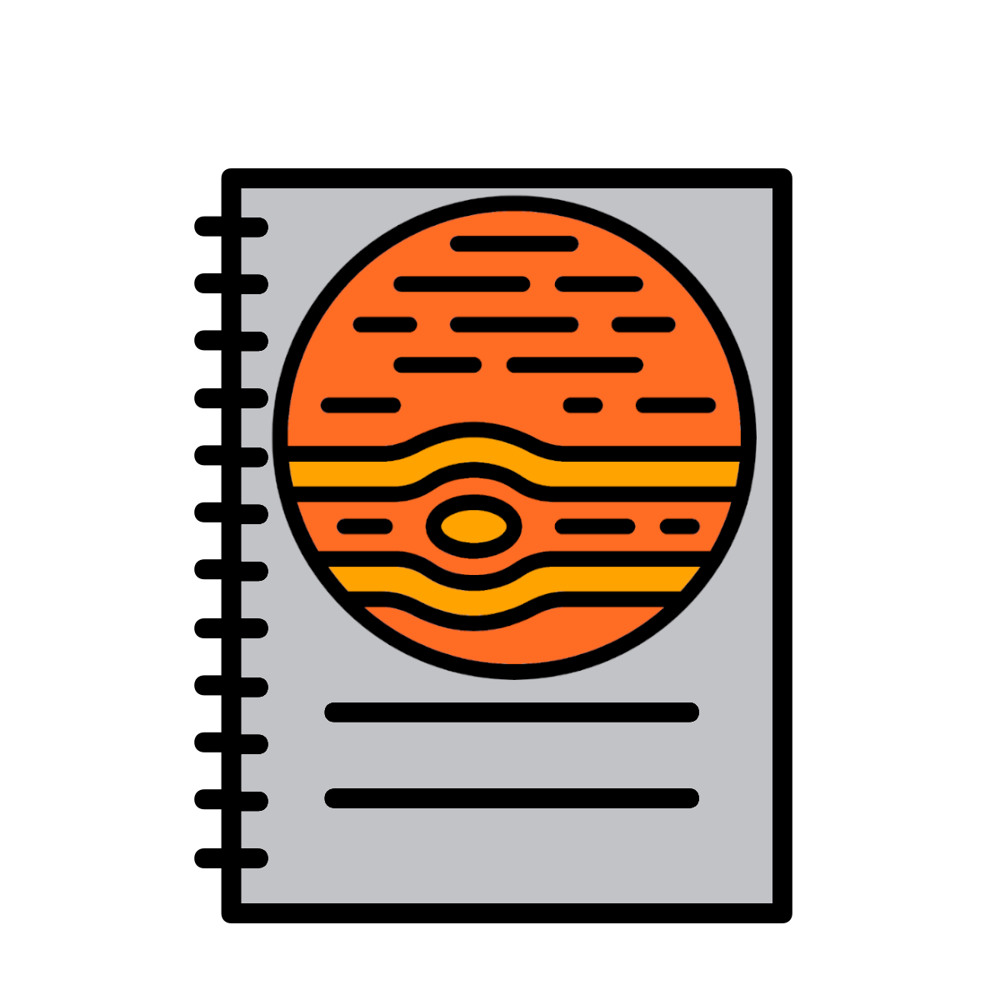

Chapter 3 R plotly
Plotly is a graphing library that allows you to create interactive charts and maps. These are in the form of html files.
This works with python, R, ggplot2, and other languages.
You can create plots with plotly's own library in R.
However, we'll demonstrate how to plotly plots with ggplot2.
You can even embed these in online books like the below chart. Try hovering over points to get more information on them.
library("ggplot2")
library("plotly")
library(palmerpenguins)
data(package = 'palmerpenguins')
scatter_plot <- ggplot(data = penguins, aes(x = flipper_length_mm, y = body_mass_g)) +
geom_point(aes(color = species,
shape = species),
size = 2) +
scale_color_manual(values = c("darkorange","darkorchid","cyan4"))
ggplotly(scatter_plot)##
## Attaching package: 'plotly'## The following object is masked from 'package:ggplot2':
##
## last_plot## The following object is masked from 'package:stats':
##
## filter## The following object is masked from 'package:graphics':
##
## layoutAdditionally, try out the other controls.
3.1 Jupyter notebook

As always we'll start off by creating a new R notebook and loading in the required libraries.
Create a new notebook called "plotly_tut", the location does not matter.
The libraries required are:
3.2 Penguin data
We are going to use the same penguin data as the first plot in this chapter. More info in the penguin data can be found on this website.
First we need to load it into R as a data frame.
3.3 PNG with ggplot2

After having your data the next step is to create your ggplot2 object.
We'll make a box plot of Species and sex of Penguin (x-axis) versus the Flipper length (y-axis).
We'll facet the plot by species and use sex as the x axis.
We'll save this as an object, save it as a png with ggsave(), and display it with IRdisplay::display_png().
This is what we carried out in the main book.
#ggplot2 boxplot
gg_boxplot <- ggplot(data= penguin_df, aes(x = sex, y = flipper_length_mm, fill = sex)) +
geom_boxplot() +
facet_grid(.~species)
#Save as png
ggsave(filename = "penguin_boxplot.png", plot gg_boxplot,
device = "png", dpi = 300, units = "mm", height = 200, width = 200)
#Display png
IRdisplay::display_png(file = "penguin_boxplot.png")3.4 HTML with plotly
Let's create that plot again but using plotly.
Additionally, we save the plotly plot to an html file with htmlwidgets::saveWidget().
We can then view the plot with `
#ggplot2 boxplot
gg_boxplot <- ggplot(data= penguin_df, aes(x = sex, y = flipper_length_mm, fill = sex)) +
geom_boxplot() +
facet_grid(.~species)
#Create plotly object from ggplot2 object
plotly_boxplot <- plotly::ggplotly(gg_boxplot)
#Save plotly object as html
htmlwidgets::saveWidget(widget = plotly_boxplot,
file = "penguin_boxplot.html",
selfcontained=TRUE)
#Display plotly object
plotly::embed_notebook(plotly_boxplot)You can also open "penguin_boxplot.html" via the jupyter navigation page to view it.
3.5 Recap

Plotly is a nice way to make interactive plots.
These can be embedded in jupyter-notebooks or html reports made with programs like R Markdown.
They are very useful to interrogate data but they will not be as useful for make static plots for visualisation.
If you have the time and inclination please try making some plotly htmls with the plots you created in the main book for this course.